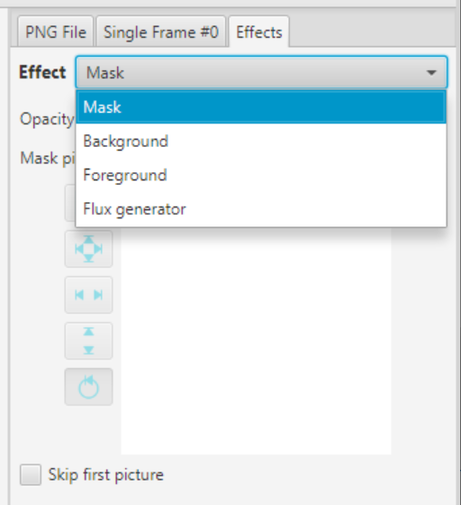
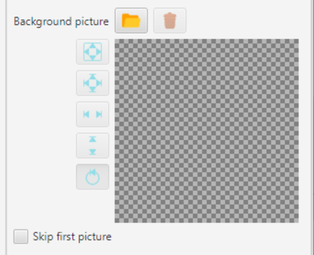
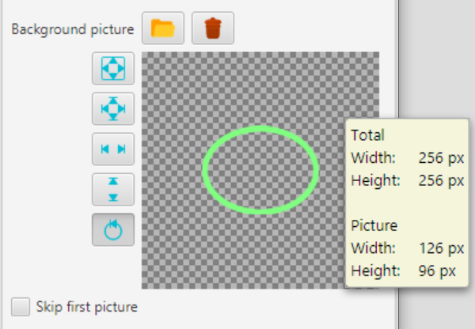
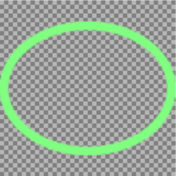
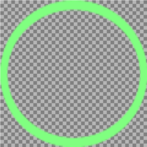
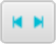
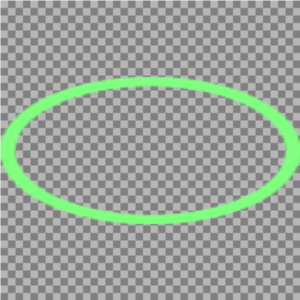
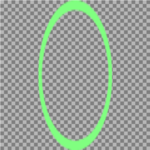
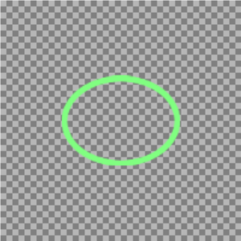

Effects
In addition to animation, RunPNG offers a few useful effects. These will be permanently connected to the finished image, because the generally applicable PNG format does not have such effect additives. Ok, one could define own data blocks for something like this, but then no other software except RunPNG would understand them.
The effects can be found under the tab of the same name in the sidebar.
Effect Selection

There are currently four options available in the selection list.
Mask: Who is familiar with graphics programs may also know the functionality of the layer mask. This is a masking of the graphic with a greyscale image. Whereby the color white means full representation and black means complete transparency. The nuances in between make the graphic look more or less translucent.
Background: The background can be a simple color, a loaded image, or both. As the name suggests, the background is behind the graphic or image sequence.
Foreground: The foreground can also be a simple color, a loaded image, or both. The foreground is in front of the graphic. So the simple color should be at least translucent. Otherwise you would not see anything of the animated image sequence. The situation is similar with an additional image that should also have transparencies.
Flux Generator: Strictly speaking, this is not really an effect that is applied to a sequence of images. The Flux Generator creates a new image sequence based on an image that has been loaded. This means that any previously loaded image sequence would be overwritten when the Flux Generator was used.
The effects mentioned can of course also be used together.
Picture Box
The individual effects are described on their own pages. This is about the picture box element, which is represented on all effect pages.
A single image is loaded into the picture box by clicking the - button. And it can be removed using the - button.
There are five buttons on the left side of the picture box. These buttons are used to scale a loaded image for the purpose of adaptation. However, scaling is only possible and useful if the loaded image has other dimensions than those with which the application is working. If a dimension - width or height - is larger, it can be compressed. If it is smaller, it can be stretched. Let's take the following ellipse as an example. The picture can be found under RunPNG/doc/samples/various/green-ellipse.png..
According to the tooltip, the ellipse has 126 x 96 pixels, while the application in this case is set to 256 x 256 pixels. So there is potential for growth in both directions. No zoom level has been selected at this moment. The individual scaling levels look as follows.
 |
Symmetrical scaling: The image will be scaled while preserving the aspect ratio. |  | |
| Asymmetrical scaling: The image will be scaled to the relative width and height of the application. |  | ||
|  | Horizontal scaling: The image will be scaled to the relative width of the application. The height remains unchanged. |  | |
 |
Vertical scaling: The image will be scaled to the relative height of the application. The width remains unchanged. |  | |
| Reset scaling: The image will be reset to its own dimensions relative to the size of the application. |  |
Skip First Picture
The effects such as mask, background and foreground have an option button below the image box for skipping the first image. This is intended to don't apply the effect in the case of the mode Animated, skip first frame. It is at the discretion of the user to use this. In the case of the Animated or Not animated modes, however, it wouldn't make much sense to use this option.